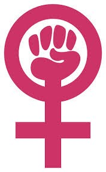

Women In Engineering
Contents
- Fun & Gender Bender
- Heels Behind The Wheels
- Ode On The Sacrificial Lamb
- Of Movies & Women
- Proud To Be A Gossip Girl
- Swapped Roles
- The Spirit Of Indian Women
- Yes I Am...
- Being Woman
- Women In The Board Room
Fun & Gender Bender
When it comes to the topic ‘WOMEN’- what’s the typical notion of men? They think we’re dumb, brainless breeds. Unlike to what men think I believe women are the god’s best creation ever. We women know how to make ourselves comfortable in an alien place. You leave three women in a room for some time, you’ll definitely hear laughter from that room after a while even if all are unknown to each other. While men playing poker with the same person for so many years, all they would be knowing about their folk precisely would be his first name, last name and the car he drives.
Now here comes the fundamentally sexist notion: that women might just be less biologically funny than men. You know what? It’s true actually. Most women aren’t funny that’s because most PEOPLE aren’t funny. Being funny is an art and to wield it successfully requires outspokenness, unapologetic honesty and self-assuredness. And those aren’t exactly the traits we foster in our little girls. (Instead we go with the women stereotypes- an extreme longing for expensive garbage, and the idea of being pretty is more important than being smart.)
Women aren’t encouraged to be an electrical engineer either, so most of electrical engineers working in those power sectors aren’t women, but only some misogynistic dumbass would suggest that it’s because our tiny woman-brains are broom-shaped instead of being bulb-shaped. The reason that people don’t respond well to women’s ability to crack jokes on themselves is because they don’t read them as jokes and also our society has trained women to hate themselves.
But I proudly say that I’m a woman and I’m really funny all the time.(Attention: I know that you’re so tempted to trash my views I just presented to you. And you can’t wait to tell me that you don’t think I’m funny and you could do a better job than me. That’s totally fine. A lot of people don’t think I’m funny. But enough people DO think I’m funny, so don’t be jealous honey. Anyways, neither I nor you are getting paid to be funny, so just chill.)
Heels Behind The Wheels
Who are the better drivers- men or women? I don’t think any gender related argument has been more heated than the one that rages behind the wheel. The statistics say that while women cannot park the car, men cannot avoid violating traffic rules! There have always been jokes about who drives better. Even driving is not sex-blind! Women aren’t trying to prove any point by slipping into the driver’s seat, for most men and women it’s a necessity. All and all, the bottom line is that no matter which gender the driver belongs to, all drivers need to be careful when on the road. Driving is serious business and the age old “fight” of who is the better driver, men or women, will not solve the problems faced by drivers and pedestrians alike. Only taking driving more seriously and obeying all traffic rules and regulations will help make driving safer for both the genders.
If you are a woman, know how to drive and are not being stopped from driving, consider yourself lucky. Saudi women are fined for driving. Women drivers in Saudi Arabia are just as rare as item girls in Saris, because Saudi Arabia prohibits its women from driving. And you thought you lived in an egalitarian world? On 26th October, 2013 Saudi women held a campaign to defy the ban on women drivers, taking to the streets as part of a push to allow women to attain driver's licenses. Thousands of people have signed an online petition supporting the protest, which government and religious officials have spoken out against. A Saudi cleric who had hoped to discourage female drivers said that sitting behind the wheel of a car could harm a woman's ovaries. The most bizarre thing I have ever heard! Women drivers are considered a threat to their male ego. An insecurity that stems from the fact that the fairer sex is able to do what the men are traditionally supposed to do. You don’t have to be an activist to realize how irrational this is.
There are certain things you just cannot relate to a woman i.e. drunk driving, violation of traffic rules, and indulgence into any kind of clash on road. On the flip side, it is a common perception that if you see anyone not driving well, the first thought that crosses your mind is– it must be a woman. Partly due to this notion it was impossible to imagine a woman chauffeur a few years back. But, female cab drivers have already broken into India’s hostile male profession. Sakha Consulting Wings, a project initiated by Meenu
Vadera of the Azad Foundation, in 2008, is a voluntary group which helps disadvantaged women look for employment. There are a handful of other such initiatives in New Delhi and other Indian cities that are tapping into a new but promising market for cabs driven by women. They select women from the minor sections of the society and train them to drive cabs professionally. The benefits are that it gives these women a better life as well as a socio-economic freedom. It ensures livelihoods with dignity for resource-poor women who become drivers, and on the other hand, offers safe mobility for female passengers.
There is more to it than getting a license to drive. It means going to work in an openly hostile field, where road rage, physical threats and sexual violence are often sparked by the sight of a woman behind the wheel. Though, female passengers would feel more comfortable traveling with a female cab driver, an apparent question of safety of these female taxi drivers comes into picture as these female drivers like their male counterparts have to travel in the wee hours of the night.
To face such a situation boldly, female taxi drivers are fully trained in self defense and car maintenance. Women will always have to walk that extra mile; there are always going to be perils of a round-the-clock job for them. But the alpha females have never feared to challenge convention!
For the record, I drive. I love driving. I drive well and I know it. It gives me a thrill, and this thrill does not come from high speed driving or jumping red lights. It comes from not having to depend on your parents. It feels so liberating steer your own path. And while you do that, just don’t forget to wear your seat belt!
Ode On The Sacrificial Lamb
And with the dewdrops dawns another day,
She looks forward to the opportunities in the world.
For when fools friends and foes say:
”You’re nothing but a worthless slob”.
Dejected, she begs for a reason, she prays,
While believing it with all her heart.
Her elders tell her not to stray,
But emotions twisting her insides,
She wants to know why she has to stay,
When her brother is out enjoying.
“A woman I am”, you hear her say,
Trials and tribulations
Are parts of being this unfortunate race,
As life is not a cakewalk.
But look at him,
That man so gay,
He enjoys life to the fullest.
“But a woman I am”, you hear her say,
That is not meant for me.
Why she does it, one cannot say,
You want to tell her to live,
As each day passes, she continues to pray,
For the wellbeing of all men living.
Ridiculous you are and the life that you live,
If you put everyone before you.
While I, me, myself is heavily condemned,
Think about yourself too.
But is she really the one to blame?
Where society plays the cards,
Her life is but a joyous game,
And the chauvinists are in charge.
Women In Movies
One day I came across an article in the newspaper, according to which a survey conducted by the G20 countries has found that India is the worst place to be a woman, along with the fact that UN has decided to conduct a survey on the portrayal of women in the world cinema. Even, Gurcharan Das mentions in his book, ‘India Unbound’ that the definition of modernization is indeed westernization of the society, including description of the 'modern' women as the cigarette smoking, alcohol consuming, and infidelity doing part of the population.
Much role played in this regard is by Cinema. It has been showing men, as a villain, a rapist, a drunkard and a smoker, not to mention their portrayal as a royal and super class who always have women (mothers, daughters, sisters or wives) to serve them, to give them a glass of water after every trip they take to the office for they are the bread winner of the family. Although, it shows woman as a successful businesswoman, but seldom have I seen this royal portrayal for the fairer sex. Majority of the times, it is portrayed like the former part of Cinderella, wherein the queen of the business house suddenly becomes a slave at her own house. Here, the point to ponder over is that persons (especially children) gather and emulate what they see. How can we expect our sons to grow up and respect their own sisters when they haven't seen their own fathers respecting their mothers, or sisters? How can we expect them to be gender sensitive when movies (enjoyed by almost everyone) portray that women are there just to serve the interests of men, to be at their beck and call consistently? And the moment she decides to take a stand for herself (like getting out of a bad marriage or maybe speaking against the dowry system or maybe just claiming her rights in the ancestral property or just the fact that an accident rendered her a widow) she is deemed to be an outcaste, sentenced to a life at a place far far away from the place she was brought up in. Somebody questioned me the other day if language used helps to create a gender divide!
Okay, so here's a small test everyone can use- talk to a child of about 5-7 years; ask him questions about the society. It will reflect truly on what the society actually is these days. When they say 'Child is the Father of the Man’, it is actually true. Try this technique and you shall find some closure in the things I have said above. My childhood was in the 90’s. Growing up, I was always taught that there is no difference between the genders. I belong to a family where number of girls is greater than that of boys. Yet, we were all brought up equally with same amount of love and facilities. The rules too have remained unchanged over time. This practice now seems to gradually decrease these days.
The other day I met a kid. He studies in a good school in Delhi, has a great number of action figure toys, is nice to talk to, but when you hear him chitter and chatter, it makes us realize where the real fault lies.
It’s not in the society within but in the way it is portrayed to these kids when they are young, which they emulate blindly once they grow up and never really spare a moment of thought as to if the practice is liable or not.
The big screens are a big reflection on us and our society. And its time we give a serious thought to what we want to see on them. It’s time to spare a moment of thought.
Proud To Be A Gossip Girl
Being a Woman, I feel that following the latest trends is not just a hobby, it builds up character and helps one gain self-confidence.
In present time, fashion has become a form of self-expression and adornment. Fashion is a reflection of what we are. It allows us to convey our individuality.
Women do not follow fashion merely to impress the dudes. They do it for themselves, to help themselves feel good and confident. A woman won’t be able to express herself unless or until she feels confident about herself.
Being a follower of the famous T.V. series 'GOSSIP GIRL', fashion and gossip girl are closely related terms to me. What I really miss about gossip girl is the incredible fashion statements of Serena and Blair. Their wardrobe incorporated with the awesome unforgettable designs of ERIC DAMAN, really inspires me a lot. I personally feel the way you dress up reflects your opinion, mood. The fashion statements of the cast in gossip girl brings inspiration to me and my other folks.
Women are looked upon as a gossip mongers and are often called judgemental but there’s more to us. We judge each other because we always look for an inspiration, the bold ones. This is because the dressing sense is a deciding factor of your image. Every woman wants some image of hers whether it’s bold, beautiful or funky.
A 'Gossip Girl' addict can’t look at a headband without thinking of Blair Waldrof. It was her sartorial trademark since the very first season and it helped define who she was throughout the series ladylike, well-mannered and elegant. Blair's wardrobe was the best example of being unafraid to mix up seriously bold hues, after all she is one of the best dressed T.V. celebs of all time.
And how can we forget the beautiful Serena. Her wavy hair, quirky hats and oodles of jewellery all upped the fashion ante. Also the sequin cardigan wore by Serena are all time hit.
As the characters of Gossip girl were school going teenagers, it helped upgrading school fashion a lot. Every gossip girl from Serena to Jenny and the extras, used to customize their school uniform with thoughtfully placed scarves and patterned net tights, which made them look model-like in their boring school uniforms.
And finally I would like to tell GOSSIP GIRL, that every style addict loves you. XO XO GOSSIP GIRL!!!!!!!!!!!!!
Swapped Roles: A New Generation Of Sissies And Tomboys
Do you get confused when you see guys talking to their friends about how their girlfriends are ruining their lives by not talking to them 24*7 or repeating “I Love You” thrice a day? They might have said these magical (or not-so-magical) words twice-‘long gone are those days when they wear long hair and fancy earrings to confuse you’. These guys are over sentimental, extremely conscious about their looks, ultra insecure and super “drama kings”. These are the Fussy Sissies.
Coming to the girls, who try to behave no lesser than a guy, indeed like a dude, from using abusive language (in a very fake desi tone) to getting all drunk, they give the guys a tough competition. Maybe they are a bit depressed because of the discrimination against them by the society and hence behave this way (see I'm a girl, so according to the basic nature laws, I'm going to defend girls anyway).
Women do not follow fashion merely to impress the dudes. They do it for themselves, to help themselves feel good and confident. A woman won’t be able to express herself unless or until she feels confident about herself.
Before putting an end to this endless discussion, I'm giving a few useful tips to all the confused souls-
- Love The Way You Are: This philosophy works for every problem; whether you are battling peer pressure, stage fright, inferiority complex etc etc.So, if you're swapped by God's grace and your inherent nature is like that then stay like that way(And no geniuses, I'm not talking about the transgender issue.) but to adjust in a group or to be a part of a conversation, Do Not Pretend.
- Adopting a few good characteristics isn't bad at all: Now, what attributes can guys adopt from girls? Well, the list is long: Patience, tolerance, their kind and empathetic nature etc etc.And vice versa as well, the girls can learn a lot from the guys.For Eg: Girls should learn to digest a few facts in their tummy. By the way, its not their fault at all, mythology has an explanation. It’s because of a curse given to womankind by Yudhishthir (For all those weak in Indian mythology, he's a character in Mahabharat) when he learnt that his mother had hidden the fact that Karn was his brother, that too after Karn had sacrificed his life in the battlefield. According to the curse, a woman will not be able to hide facts.

Apart from this, girls can learn flexibility, being a good listener (sometimes!), activeness and carefree attitude which comes when you stop overanalyzing.(Sorry for disobeying the basic nature law but otherwise I would be targeted as being sexist).
I would like to put an end to this fruitful discussion by telling y'all to stop trying to change what you are. Respect God. He made you what you are for a reason!
The Spirit Of Indian Women
Within every woman is a storehouse of inexhaustible strength. In a country like ours, where women were believed to be the weaker sex for centuries, there were women who made their mark and became a great source of inspiration for women all over India. Today, we see women in each and every field, competing neck to neck with men, and even beating them at their own jobs. Here are a few landmarks in the history of women in India:
- Within every woman is infinite enthusiasm.
1905, Suzanne R D Tata became the first Indian woman to drive a car. - Within every woman is an unquenchable thirst for knowledge.
1916, The first Women’s University (SNDT) was founded. - Within every woman is immeasurable potential.
1927, The All India Women’s conference was founded. - Within every woman is an indomitable spirit.
1951, Prem Mathur became the first Indian woman commercial pilot of the Deccan Airways.
- 
- Within every woman is infinite wisdom.
1959, Anna Chandy became the first Indian woman judge of the high court. - Within every woman is inestimable power.
1966,Indira Gandhi became the first Indian woman Prime Minister of India. - Within every woman is unstoppable resolve.
1970, Kamaljit Sandhu became the first Indian woman to win a gold at the Asian games. - Within every woman is an Iron will.
Kiran Bedi became the first female recruit to join the Indian Police Service.
Yes I Am...
To the innocent human with a Golden Heart,
Yet the epitome of Courageous spirit of her Lioness part.
To the person who can bear more than one can imagine,
Yet when she decides to fight back, she can definitely ruin.
To the symbol of Evolution of the entire Humanity,
Yet she suffers and bears the unjust social disparity,
To those who are dignified enough never to say,
That, ''Men! Admit it, I am superior in every way,
For you can never Give a Life or bear that Pain,
But I can Do all that you can n still never complain.''
To every little soldier oppressed in every little hovel,
To every little rebel suppressed in every little trial,
To Each and every Fighter Woman of the entire Human Race,
I salute and with solemn heart I pray,
May they have strength to fight this conservative world,
May they get all the opportunities to strengthen their word,
I am with all the oppressed women who are fighting,
Yes, I am a proud educated Woman in Engineering!
Being Woman
What is a woman? A woman is defined as an adult human female. But one sentence can’t do justice to the meaning of woman. A woman is a person who starts loving her baby even when she has not seen it. A woman is someone who can sacrifice all her dreams and ambitions for the people she loves. A woman is someone who overthinks and gets upset at small things. She is the one who creates a generation after her!
But in the recent times I’ve observed that a woman is just seen as the “other sex” or the “weaker sex”. She is seen as someone who has to do the chores and is considered as an object to be used when out in the public. Instead of respecting women, people eye them as an object of pleasure and entertainment. Her success is always eyed suspiciously by the people.
A woman’s life is never her own. Her life is her parents’, relatives’, siblings’ and even the society’s, but never hers! If a woman is not married, it is her fault. If she overcomes her past, she is heartless. If she is raped, she is inviting. If she cries, she is weak. If she doesn’t, she is made of stone. If she’s career oriented, she is a bad example, if she is a homemaker, she is dumb.
Being a follower of the famous T.V. series 'GOSSIP GIRL', fashion and gossip girl are closely related terms to me. What I really miss about gossip girl is the incredible fashion statements of Serena and Blair. Their wardrobe incorporated with the awesome unforgettable designs of ERIC DAMAN, really inspires me a lot. I personally feel the way you dress up reflects your opinion, mood. The fashion statements of the cast in gossip girl brings inspiration to me and my other folks.
As Louisa May Alcott has written in her novel, “Little Women”, ‘When women are the advisors, the lords of the creation don’t take the advice till they have persuaded themselves that it is just what they intended to do. Then they act upon it, and, if it succeeds, they give the weaker vessel half the credit of it, if it fails, they generously give her the whole’.
We women always get half the credit but the complete blames is on us.
Being a girl, being a woman is a terribly difficult task in this male oriented society, always having to overcome the prejudices and judgments of the society. But yes, I do have hope. All hope has not been lost yet. I hope that in the near future we won’t have to prove ourselves every step of the way and we are treated in that way which we deserve.
Stefan Zweig said that, “Whatever a woman’s reason may say, her feelings will always tell her the truth.” And hence I feel that maybe someday we will be respected for who we are and not what everyone expects us to be.
Women In The Board Room
Despite of encouraging statistics that the number of women on management boards is on increase, they continue to face significant barriers in climbing up the corporate ladder. Women are frequently overlooked for developing opportunities due to the perception that they would not understand corporate issues or corporate board governance. To achieve the objective of seeing women on boards, certain measures have to be taken to increase the demand for women in corporate sector and also expand the scope for female candidates by increasing the number of women reaching the executive management and encouraging them to play a role in corporate boards.
Today’s organizations encounter capricious markets, unceasing international competitive firms, complex technologies and also dramatic changes of the society. Of all these changing contexts, the change in management composition of organizations is the most important. The change in “Think Manager: Think Male” attitude led to increased proportion of women attaining positions in higher level of management. This gender diversity in the boardroom had a positive impact on the performance of organizations. Evidences suggest that companies with strong female representation show a more ameliorative performance than those which do not.
Homogenous boards with members of similar background and education are more likely to produce “group think”. Hence diversity in board members brings different perspectives to the debate and decision making process. Women often have different experiences from the male counterparts which add to the diversity. Having women on boards, who in most of the cases represent the customers companies’ products, improve understanding of
customer needs resulting in a more informed decision making. The more gender balanced boards are observed to show different governance behaviors. They ensure better communication and focus on non-financial performance aspects such as customer and employee satisfaction and corporate social responsibility.
In the last decade, there has been a commendable increase in the number of women on boards. Coming to the global scenario, the European countries top the charts indicating the number of women on boards followed by the contiguous United States. Within India too, women are being encouraged to attain higher positions in the hierarchy of management. The Companies Bill 2012 of India proposes that one woman director be appointed on the board of directors in companies.